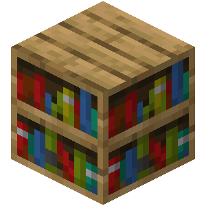
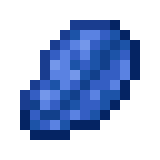

Encantamentos
Existem quatro maneiras de encantar um item no modo Sobrevivência

• Através de uma mesa encantadora em troca de pontos de experiência e lápis-lazúli. Somente itens não encantados podem ser encantados desta forma.
• Através de uma bigorna, combinando um livro encantado com um item.
• Através de uma bigorna, combinar dois itens iguais com diferentes encantamentos existentes em um único item que possui os encantamentos de ambos.
• Através de um aldeão bibliotecário, que pode encantar livros respectivamente por esmeraldas em vez de lápis-lazúli e experiência, o que dá ao jogador experiência como qualquer troca.
Equipamentos para Encantamento
| Nome | Icone | Uso |
|---|---|---|
| Mesa de Encantamento |  |
Usada para encantar itens. |
| Estante |  | Cada estante (até 15) aumenta o nível dos encantamentos dados pela mesa de encantamento. |
| Lápis Lazúli |  | Necessário para alimentar a mesa de encantamento. |
| Bigorna | Usado para combinar itens encantados (ferramentas, armaduras, armas, etc.), adicionar encantamentos de livros ou reparar um item encantado preservando os encantamentos. | |
| Rebolo | Usado para remover todos os encantamentos não amaldiçoados de um item, retornando uma pequena quantidade de experiência e, opcionalmente, reparar um item sem experiência. | |
| Livro Encantado |  |
Pode ser combinado com outro item através de uma bigorna para adicionar certos encantamentos ao item. |